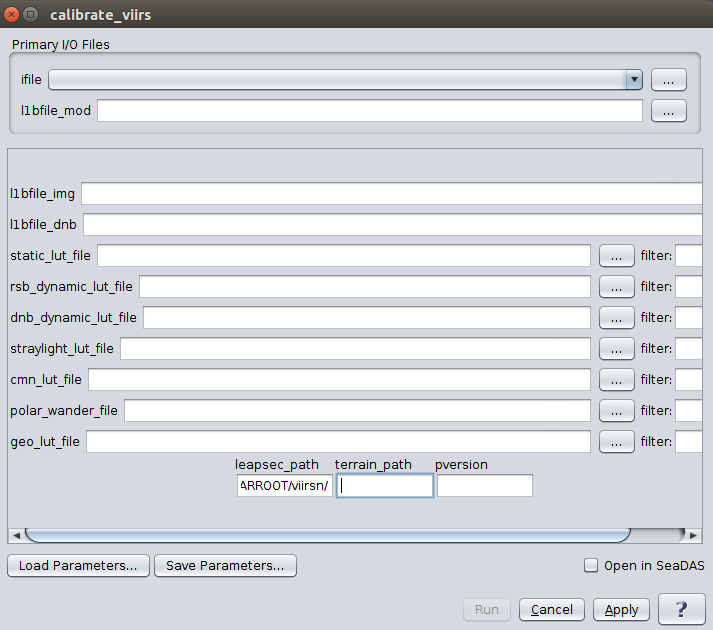

| calibrate_viirs | |
Creates an L1B file from VIIRS L1A input files.
Location
Details
Command Line Usage
Tools -> OCSSW Processing ->calibrate_viirs
<calibrate_viirs creates an L1B file from VIIRS L1A input files.
|  |
| UI Element Name | Type | Description | Required/Optional | Default Value |
| ifile | Text Field | VIIRS_L1A_file name | Required | |
| libfile_mod | Text Field | output L1B MOD filename | Required | Generated by the program based on the input L1A file name |
| l1bfile_img | text | output L1B IMG filename | Optional | |
| l1bfile_dnb | text | output L1B Day Night Band filename | Optional | |
| l1bfile_cdg | text | output L1B un-aggregated dual gain filename | Optional | |
| static_lut_file | text | static calibration LUT filename | Optional | |
| rsb_dynamic_lut_file | text | RSB dynamic calibration LUT filename | Optional | |
| dnb_dynamic_lut_file | text | day night band dynamic calibration LUT filename | Optional | |
| straylight_lut_file | text | stray light calibration LUT filename | Optional | |
| cmn_lut_file | text | common calibration LUT filename | Optional | |
| geo_lut_file | text | geolocation LUT filename | Optional | |
| polar_wander_file | text | polar wander filename | Optional | |
| leapsec_path | text | path to the leap second file | Optional | |
| terrain_path | text | path to the terrain height files directory | Optional | |
| land_water_mask_path | text | path to the land/water mask file directory | Optional | |
| verbose | boolean | print status messages< | Optional | false |
| pversion | text | processing version string | Optional |
| UI Element Name | Type | Description |
| Browser Button | Button | Selects infile/ofile |
| Load Parameters ... | Button | Reads in previously saved parameters and populates the fields in GUI. |
| Store Parameters ... | Button | Saves the current arguments in GUI in a file. |
| Run | Button | Executes the calibrate_viirs command with arguments provided in the UI. |
| Cancel | Button | Closes current processor GUI. |
| Apply | Button | Makes current arguments effective. |
| Open in SeaDAS | Checkbox | If selected, the ofile will be added to the open products list right after its generation. |
| ? | Button | Displays the help content of the current command. |
Usage: calibrate_viirs argument-list
This program takes a VIIRS L1A file and outputs an L1B file.
The argument-list is a set of keyword=value pairs. The arguments can
be specified on the commandline, or put into a parameter file, or the
two methods can be used together, with commandline over-riding.
The list of valid keywords follows:
-help (boolean) (alias=-h,--help) (default=false) = print usage information
-version (boolean) (alias=--version) (default=false) = print the version
information
-dump_options (boolean) (alias=--dump_options) (default=false) = print
information about each option
-dump_options_paramfile (ofile) (alias=--dump_options_paramfile) = print
information about each option to paramfile
-dump_options_xmlfile (ofile) (alias=--dump_options_xmlfile) = print
information about each option to XML file
par (string) = input parameter file
ifile (ifile) = input L1A file name
l1bfile_img (ofile) = output L1B IMG filename
l1bfile_mod (ofile) = output L1B MOD filename
l1bfile_dnb (ofile) = output L1B Day Night Band filename
l1bfile_cdg (ofile) = output L1B un-aggregated dual gain filename
static_lut_file (string) = static calibration LUT filename
rsb_dynamic_lut_file (string) = RSB dynamic calibration LUT filename
dnb_dynamic_lut_file (string) = day night band dynamic calibration LUT
filename
straylight_lut_file (string) = stray light calibration LUT filename
cmn_lut_file (string) = common calibration LUT filename
polar_wander_file (string) (default=$OCVARROOT/viirsn/polar_wander.h5) =
polar wander filename
leapsec_path (string) (default=$OCVARROOT/viirsn/) = path to the leap second
file
l1b_lut_file (string) = l1blocation LUT filename
terrain_path (string) (default=$OCDATAROOT/viirsn/dem) = path to the terrain
height files directory
verbose (boolean) (alias=v) (default=false) = turn on verbose output
pversion (string) (default=Unspecified) = processing version string